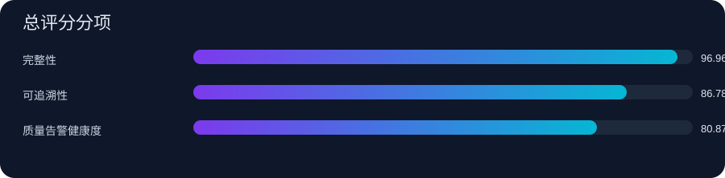
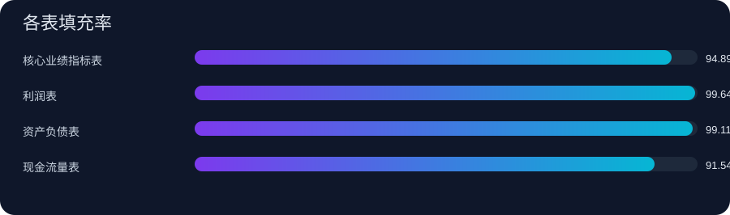
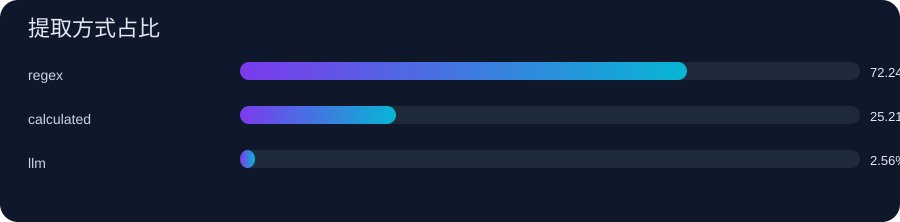
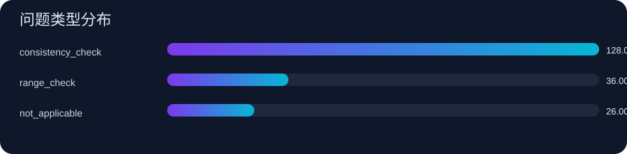

财务报告数据质量可视化报告
生成时间：2026-04-25 09:20:39
数据库：<项目目录>\
公司数量 10
报告期组合 120
总评分 89.89
评级 良好
本次任务总体评级为良好，总分 89.89。当前最强维度是 完整性，最需要提升的是 质量告警健康度。
89.89
良好
总分用于横向比较任务质量，不等同于人工标注准确率。
完整性得分
96.96
整体填充率 96.56%
可追溯性得分
86.78
追溯覆盖率 95.12%
告警健康度
80.87
Warning 164 / Error 0
Regex占比
72.24%
LLM 2.56% / Calculated 25.21%
评分维度
分数越高越稳定，可用于比较不同导入批次和规则版本。
完整性
96.96
可追溯性
86.78
质量告警健康度
80.87
总体解读
regex 提取占比为 72.24%，多数值来自更稳定的显式提取。
最近一次导入没有 error 级问题，当前流程没有出现明显硬失败。
分项评分图

各表填充率

提取方式占比

问题类型分布

优势
regex 提取占比为 72.24%，多数值来自更稳定的显式提取。
最近一次导入没有 error 级问题，当前流程没有出现明显硬失败。
风险
计算字段占比达到 25.21%，说明部分指标依赖后处理而非原文显式提取。
最近任务共有 164 条 warning，主要问题类型需要持续压降。
低覆盖最明显的字段是 现金流量表.financing_cf_cash_from_borrowing，当前填充率为 63.33%。
优先动作
优先补齐低覆盖字段：现金流量表.financing_cf_cash_from_borrowing(63.33%)、核心业绩指标表.net_profit_qoq_growth(75.00%)、核心业绩指标表.operating_revenue_qoq_growth(75.83%)
优先复核高依赖后处理字段：balance_sheet.asset_total_assets_yoy_growth、balance_sheet.liability_total_liabilities_yoy_growth、core_performance_indicators_sheet.net_profit_margin
优先压降告警类型：consistency_check(128)、range_check(36)